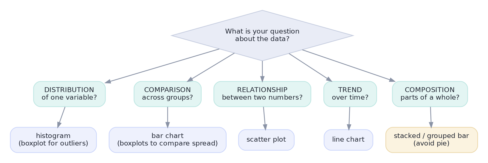
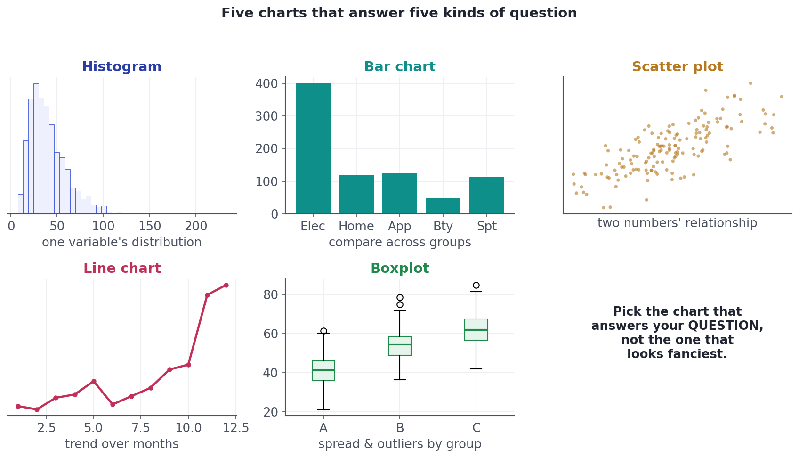
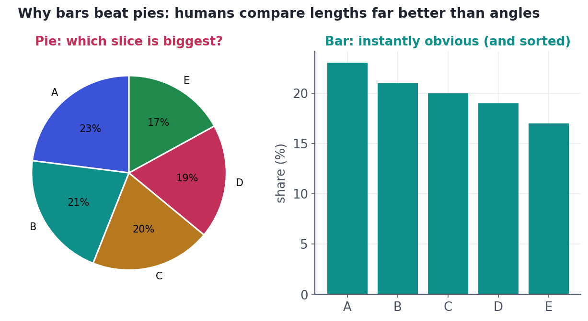

Choosing the Right Chart
A decision from your question to the chart that answers it — and why bars beat pies.
A chart is a tool with one job: make the answer to a question obvious at a glance. Pick the right chart and a pattern leaps out; pick the wrong one and you bury the insight or, worse, imply something false. The good news is that choosing well isn't taste — it's a short decision based on what question you're asking. This lesson gives you that decision and the handful of charts that answer almost everything.
MethodMatch the chart to the question
Don't start from 'what chart looks nice?' Start from 'what do I want to know?' Five question types cover the vast majority of data work, and each has a natural chart:

ConceptThe five workhorses
You can go a very long way with just five chart types. Know what each is for:
- Histogram — the distribution of one numeric variable (shape, center, spread, skew). A boxplot is its cousin when you care about outliers or comparing groups.
- Bar chart — comparison of a value across categories. Sort the bars unless the categories have a natural order.
- Scatter plot — the relationship between two numeric variables (the picture behind correlation, Lesson 4.10).
- Line chart — a trend over time (or any ordered axis).
- Boxplot — spread and outliers, especially compared across groups (Lesson 4.2).

PitfallWhen NOT to use a pie chart
Pie charts are the most over-used, least effective common chart. The reason is human perception: we judge lengths accurately but angles and areas poorly. When slices are close in size, a pie makes you squint; a sorted bar chart makes the ranking instant.

Worked exampleChoose, then plot
The question here is 'how does revenue compare across categories?' — a comparison, so the chooser says bar chart (sorted). First the data, then the plotting code you'd run (press Run to render it in your browser).
import pandas as pd
revenue = pd.Series({"Electronics": 399, "Apparel": 125, "Home": 118,
"Sports": 113, "Beauty": 47}, name="revenue_k")
# Comparison across categories -> sort, so the ranking is obvious:
print(revenue.sort_values(ascending=False).to_string())Electronics 399 Apparel 125 Home 118 Sports 113 Beauty 47
import matplotlib.pyplot as plt
# A sorted horizontal bar chart — ideal for comparing categories.
revenue.sort_values().plot.barh(color="#0e8f8a")
plt.xlabel("revenue ($000s)")
plt.title("Revenue by category")
plt.tight_layout()
plt.show() # press Run to render itSorting the bars is a small touch with a big payoff: the eye reads the ranking instantly. Horizontal bars (.barh) also keep long category labels readable. Little choices like these are the difference between a chart that informs and one that merely decorates.
★ Key points to remember
- Choose a chart from your question: distribution → histogram; comparison → bar; relationship → scatter; trend → line; composition → stacked bar.
- Five workhorses cover most needs: histogram, bar, scatter, line, boxplot.
- Sort bar charts (unless categories have a natural order) so the ranking is obvious.
- Avoid pie charts — people compare lengths far better than angles; a sorted bar is clearer.
- Pick the chart that answers the question, not the one that looks fanciest.
ad_spend and revenue move together across 200 campaigns. Which chart answers that directly?◆ Practice▸
Show solution & reasoning
(a) Line chart — a trend over time. (b) Bar chart (sorted) — a comparison across categories. (c) Scatter plot — a relationship between two numeric variables. Each follows directly from the question type in the chooser.
Show solution & reasoning
Plot a histogram to show the distribution and/or a boxplot to highlight the outliers explicitly (points beyond the whiskers, Lesson 4.2). Because the data is right-skewed, a helpful adjustment is a log scale on the value axis (or plotting log(amount)), which spreads out the cluster of small orders and tames the long tail so the shape is readable.
◎ Deep dive: why bars beat pies (the perception ranking) and a few more chart choices▸
Encodings, ranked by how accurately we read them. Research by Cleveland and McGill ranked the visual channels we use to encode numbers. We judge position along a common scale (e.g. dots on a shared axis, bar lengths) most accurately, then length, then angle/slope, and we're worst at area and color intensity. That single ranking explains most chart advice: bars (length/position) beat pies (angle); a scatter (position) beats a bubble chart's sizes (area); and using color for a precise quantity is a last resort. When you must show a number precisely, encode it as a position or a length.
A few more 'which chart' cases. For the relationship between two categorical variables, a grouped/stacked bar or a heatmap of counts works. For many points that overlap (overplotting), add transparency, jitter, or switch to a 2-D density/hexbin. For distributions across many groups, small multiples of histograms or a row of boxplots/violins beats cramming everything onto one axis. The five workhorses are the foundation; these are the natural next steps once the basics are automatic.
Expect "what chart would you use to show X?" Answer by naming the question type first (distribution / comparison / relationship / trend / composition), then the chart. If pies come up, explain that humans compare lengths better than angles, so a sorted bar chart is almost always clearer — a crisp, well-reasoned answer.